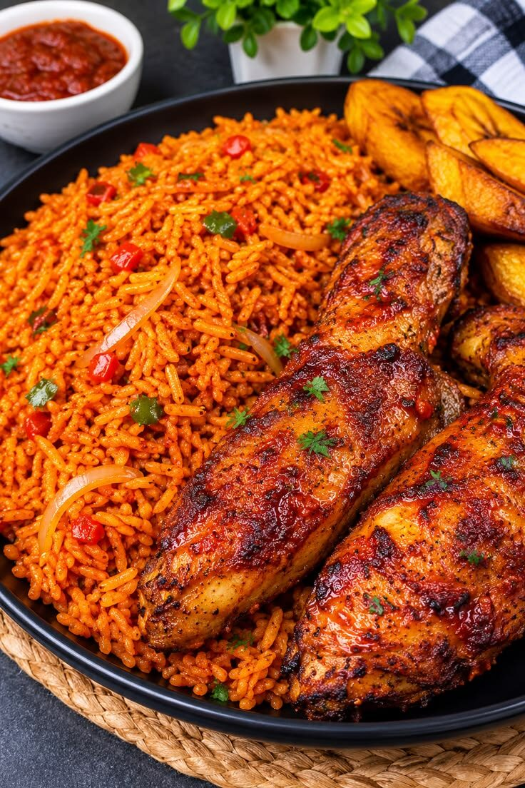
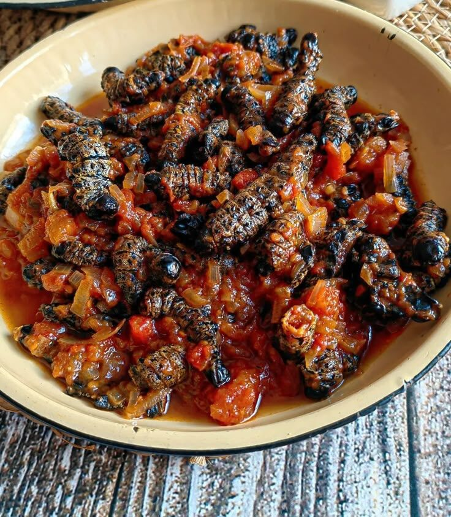

Trend
Ancient grains are back
Teff, fonio and sorghum are grains Africa has grown for thousands of years. Cooks worldwide are rediscovering them for their nutty flavour and gluten-free versatility.
Welcome
From smoky jollof rice to slow-cooked tagines, explore the recipes, spices and stories behind Africa's diverse food culture.
Four signature dishes to start your journey. Tap the heart to save the ones you want to cook later.

A smoky, tomato-red one-pot rice that is the star of every West African party.

A spongy, slightly sour flatbread made from teff, used as plate and spoon.

Chicken slow-cooked with olives and preserved lemon in a cone-lidded clay pot.

Durban's famous street food: spicy curry served inside a hollowed-out loaf.
A few plates from across Africa, from party jollof to southern African delicacies.




Trend
Teff, fonio and sorghum are grains Africa has grown for thousands of years. Cooks worldwide are rediscovering them for their nutty flavour and gluten-free versatility.
Trend
Dishes like isombe, okra stew and bean fritters were plant-rich long before the trend had a name, and they are inspiring new vegetarian menus.
Trend
Suya skewers, bunny chow and mandazi are appearing at food markets around the world, bringing a taste of African street stalls to new audiences.